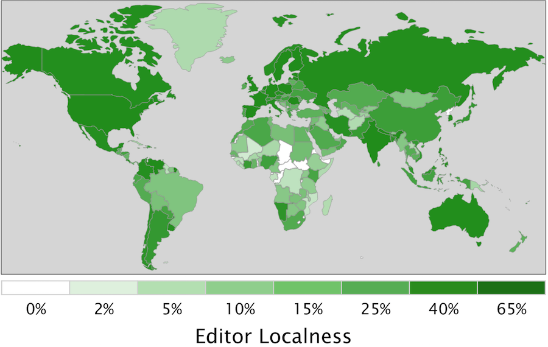

This interactive essay is a general audience adaptation of our CHI 2015 paper. Three visualizations are embedded throughout the paper (and also available in the top nav bar). We are actively working to anonymize and release the editor dataset and visualization. Until we can, the editor visualizations (shown in green) are static images. You can find details that have been omitted from this essay in our paper: Barriers to the Localness of Volunteered Geographic Information. — Shilad Sen
A density map of the four million Wikipedia articles about places. Europe and the U.S. have particularly high density of articles, while South America, Central Africa, and Central Asia have lower densities. Image from Wikimedia Commons.
Self-Focus Bias, Mapped (Hecht and Gergle, 2009): If the countries of the world were sized according to their importance as measured by the Japanese Wikipedia, this is what the world would look like. In every language edition we’ve examined, there is a strong tendency to view the “the sum of human knowledge” as revolving around places where the corresponding language is spoken.
Wikipedia helps us make sense of the world. In 277 languages from Ukrainian to Urdu, its 36 million articles deepen our understanding of the people, places and ideas that matter to us. While it can feel like a static resource, Wikipedia's articles are born and nurtured through a thoroughly human process. Behind the scenes, thousands of Wikipedians craft policy that guides decisions about whether an article reflects a neutral point of view, a source should be considered reliable, or a subject is notable enough to warrant an article. Not surprisingly, the views of individual Wikipedians often differ on these issues. Disagreements about policy and article information can lead to decisions that are debated, resolved, and re-debated again. As Yasseri et al (2014) says, "Wikipedia is more than just an encyclopaedia; it is also a window into convergent and divergent social-spatial priorities, interests and preferences."
Geographic differences underlie many differences in editor perspectives. Each editor lives in a particular place in the world, reads specific languages, and represents some national culture. These geographic differences translate to differences between language Wikipedias. For example, when compared to other languages, English Wikipedia has more unique articles about sororities and fraternities and meteorologists than any other category.
Wikipedians' geographic differences surface particularly strongly in articles about places such as cities, countries, and landmarks. Places that have weaker economies, lower literacy rates, or less broadband penetration have been shown to have substantially less content about them. The map of the world in black (right) visualizes these differences by showing the density of articles across the globe. Wikipedians also exhibit self focus bias (Hecht and Gergle, 2009); they tend to make local edits to articles about locations near them (Graham and Hogan 2014), and identify more relationships linking articles to places in their home countries (Hecht and Gergle, 2009). The map in light blue (right) visualizes these differences by showing how the world would look if countries were sized according to their importance in the Japanese Wikipedia.
Our research studies where information in Wikipedia comes from, a characteristic we call geoprovenance. We focus on the four million Wikipedia articles about places that, along with information such as TripAdvisor reviews and geotagged flickr images, constitutes the rising class of information renowned geographer Michael Goodchild calls volunteered geographic information (VGI). As some have argued (Kitchin and Dodge, 2011; Graham et al., 2013), VGI does not just represent the world, but also becomes part of the world. It forms layers of code and information that augment everyday activities: it shapes where we go, what we do, and how we perceive and understand the world that we live in. The study of geoprovenance, which we undertake here, helps us understand the perspectives, gaps, and inequalities in VGI repositories.
We study geoprovenance through two lenses. The first, editor geoprovenance, examines the relationship between the locations of Wikipedia editors and the geographic articles they edit. It asks, for example, “What countries do edits to articles about Iran comes from?” To analyze editor geoprovenance, we studied over five million edits to 39 different language Wikipedias. Each edit was geolocated using the editor's IP address and aggregated to preserve anonymity.
A demonstration of the geoprovenance inference algorithm for http://whc.unesco.org/en/list/1293. These images are taken from our interactive demo. The top map (in blue) shows the final results, which correctly predicts France as the publisher country. The bottom two maps show two components of the algorithm: the countries most likely to publish English sources (in green), and the overall likelihood of each country to publish a source (in salmon).
Our second lens, source geoprovenance, studies the citations added to Wikipedia articles. It considers the relationship between the location of geographic articles and the location of the source publishers cited in those articles. For example, it answers “What countries publish the sources cited in articles about Iran?” Every source cited in Wikipedia is produced by individuals, organisations and groups based in particular geographic regions. The source is selected by Wikipedia editors as a reliable source that supports informational claims in articles. Sources can therefore serve as an important signal about where (geographically) Wikipedia information comes from.
To analyze source geoprovenance, we inferred the home publisher of all 31 million URLs cited in 79 language editions of Wikipedia. Since no definitive data maps a URL to the country that published it, we needed to infer the publisher country. To illustrate our approach, consider consider the URL http://whc.unesco.org/en/list/1293. This page, created by the global non-governmental organization Unesco, describes the Saudi Arabian archeological site"Madâin Sâlih." This URL is cited by Wikipedia articles about Madâin Sâlih in 20 different languages, ranging from English to Arabic to Catalan
How can we determine the country of the source publisher for this URL? While some domains end with clear a country code (".us", ".uk", ".hk", etc.), the ".org" suffix in "whc.unesco.org" provides no geographic clues. If we were to examine the webpage itself we would find that it is written in English, suggesting it may have been authored in an English-speaking country such as the U.S., India, or the U.K. Geocoding the web server IP address (as we did with editors) identifies the server hosting facility as France. While these approaches can be sufficient for some URLs, none of them provides a definitive answer in this case. To accurately predicted publisher country, we incorporated two more signals of of geoprovenance. The first extracted the country of the administrative contact listed in the "WhoIs" domain name registry, a sort of phone book for domain name administrators. The second created a list of twenty thousand known organization home pages (http://www.unesco.org) with their corresponding locations mined from the amazing Wikidata project.
A statistical combination of these signals proved to be surprisingly accurate predictors. Some signals (e.g. TLD suffixes such as ".uk") were nearly perfect in accuracy, but did not apply to the majority of URLs. Others (the language of a web page and WhoIs records) were less accurate, but nearly always available. When synthesized, the algorithm correctly predicted 91% of URLs, approaching the level of agreement between humans on our test data sets.
We believe this URL geoprovenance algorithm represents an important new tool for researchers. In addition to supporting analyses of the geographic diversity of viewpoints, it could be used to identify differences in how media from different countries discuss particular issues or it could track geographic flows in online media networks. You can see a simplified version of our geoprovenance inference algorithm in action using our onlineinteractive demo. We have also released reference software implementations of it on GitHub.
For articles about each country, the percentage of cited sources that are local to that country. Clicking the image will launch the interactive visualization of sources.
For articles about each country, the percentage of edits that come from editors located in that country.
We value localness. In the food we eat, the arts we patronize, and the businesses we frequent, we seek locals who understand and support the geographic culture they inhabit. Researchers have also praised the transformative power of local contributions to VGI repositories, a shift that places “mapping where it should be, which is the hands of local people who know an area well.” Consistent with this promise, people do author information about places near them. Wikipedia editors tend to edit articles about places close to them [Hardy et al., 2012; Hecht and Gergle, 2010], a large proportion of Flickr photos are taken nearby photographers’ homes [Fischer, 2010], and Twitter users tend to tweet about locations near them [Cheng et al., 2010].
Many researchers see the shift in authorship from paid experts to volunteers — often described as public-participation geographic information science [Obermeyer, 1998] — as a way to increase local geographic information production, especially among disadvantaged populations. While prior research has established that people contribute more VGI near them, our study maps variations in localness. In particular, we study whether the contours of VGI localness adhere to or transcend the socio-economic barriers present in traditional media networks.
The right hand figures shows the percentage of local sources (blue) and editors (green) for articles about each country across all 79 language Wikipedias we study. For both sources and editors, the highest levels of localness are associated with countries that have large economies and “nation-states” responsible for a large share of worldwide speakers for their primary language (e.g. Sweden, the U.S., France, Germany, the Netherlands). Africa and the Middle East stand out as having particularly low localness. For example, many central African countries have less than 0.2% localness in both sources and editors (Chad, South Sudan, Central African Republic, the DRC). These countries in sub-Saharan Africa also have per-capita GDPs below $1000 U.S. per year, among the lowest in the world. We encourage you to explore the interactive source localness visualizations by clicking the images to the right (in blue).
For articles about countries in the Middle East and North Africa region (MENA), the percentage of cited sources that are local to that country in the English and French Wikipedias. Clicking the image will launch the interactive visualization of sources.
For articles about each country, the percentage of edits that come from editors located in that country.
To provide more detailed geographic insights, we next compared the localness of the Middle-East and North African (MENA) countries along two axes. The left column shows results for the Arabic Wikipedia while the right column represents the French Wikipedia. For example, Algeria’s dark color in the green left hand map indicates that in the Arabic Wikipedia, a large percentage of edits to articles about Algeria come from editors in Algeria (75%). Comparing the result to the other three maps, we can see that Algeria’s editor localness in the Arabic Wikipedia is substantially higher (75%) than its editor localness in the French Wikipedia (39%,
The comparison between the French and Arabic Wikipedias reveals how Wikipedia is embedded into a broader system of knowledge. The language that an editor is writing in — and the place that that language originates from — matters immensely to what information can be produced on Wikipedia. If there are few Arabic speakers in Greece, few people in Greece will create content about the country in the Arabic Wikipedia (e.g. none in our dataset). We can see the Arabic Wikipedia’s language barrier preventing local edits through much of Europe and central Africa. Similarly, local edits in the French Wikipedia are constrained to Europe and former French colonies such as Algeria and Morocco.
We performed a statistical analysis (see Table 3 in our paper), to quantify the effects we see in the maps above. Variation in source localness is largely explained by socio-economic indicators — particular the strength of a country's scholarly publishing network. For every doubling in the number of journals a country produces, the amount of local content it produces increases by 140%. For editor localness, language serves as an almost complete barrier to VGI contributions. Countries that natively speak the Wikipedia language edition (e.g. articles about Iraq for the Arabic Wikipedia) are more than five times more likely to have local content. Socio-economic barriers - in particular the number of households that have broadband access — also play an important role in editor localness.
Our results indicate that when we experience the world through VGI — either online or in augmented environments – our experience is shaped by many of the historical barriers and inequalities that existed before VGI.
The previous section studied the variation in localness. We now expanded to study patterns in both local and non-local contributions by studying the worldwide geographic network of sources and editors for articles about a particular country. For example, while the previous localness analysis answered How many of the sources cited in articles about India are published locally in India?, we now look at the broader question, "What is the geographic network of sources cited in articles about India?"
The global geoprovenance network for sources cited in articles about India in the English and French Wikipedias. Clicking the image will launch the interactive visualization of sources.
The global geoprovenance network for edits made to articles about India in the English and French Wikipedias.
The broader geoprovenance analysis reflects many of our findings for localness. Both source geoprovenance and editor geoprovenance face socioeconomic and language barriers. As with localness, countries with a small scholarly publishing network produce substantially fewer sources, and countries with few native speakers of a particular Wikipedia language edition produce far fewer editors. When combined with localness, this statistical model explains the vast majority of the variance we see. However, we find an additional association between the number of migrants between two countries. For example, if there are many migrants from India to the Germany, the model predicts that articles about India will cite more German sources and engage more German editors. The origins of this finding is unclear; is it migrant communities making these edits, or is migrantation a proxy for cultural overlap along a variety of dimensions such as language, religion, and politics. More than one underlying factor are likely leading to the association between geoprovenance and migration, and more research is necessary to unpack these effects.
An example of the geoprovenance network is shown in the right hand figures. The figures show the global geoprovenance network for articles about India in the English and French Wikipedias. The source geoprovenance network (in blue) look similar between the English and French Wikipedias, and are dominated by sources in the U.S. and India. In the English Wikipedia, other economically strong English speaking countries (the U.K. and Australia) also contribute sources, while in the French Wikipedia, France contributes plays an important role. Once again, we see that editors (in green) are dramatically affected by language barriers. While in the English Wikipedia, most edits about India are local, nearly all the edits about India in the French Wikipedia come from France.
This research offers the first large-scale study of the forces shaping the localness of VGI. We find socioeconomic barriers to VGI that suggest it may not be the equalizing panacea that it has been portrayed as being. Instead, VGI appears to follow many of the same structural barriers to equality as traditional expert-curated systems, although research must determine whether the strength of these barriers in VGI is different. More broadly, our findings suggest that if a place faces serious socioeconomic obstacles, or if you read about a place in a language that is not spoken in that place, you are unlikely to be reading locally-produced VGI or even VGI that references local sources.
We would like to thank Dario Taraborelli and the Wikimedia Foundation for helping to craft the anonymized editor geoprovenance dataset. We would also like to thank Matthew Zook for his advice about geocoding publishers. Felipe Ortega provided helpful feedback on the design of the localness visualization. This research was generously supported by the National Science Foundation (IIS-0964697, IIS-1421655, and IIS-0808692), the John Fell Fund (Oxford University), and an Amazon Web Services Research Grant.
{kind=link}